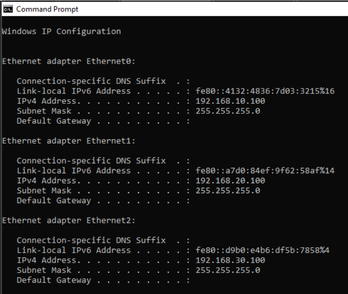
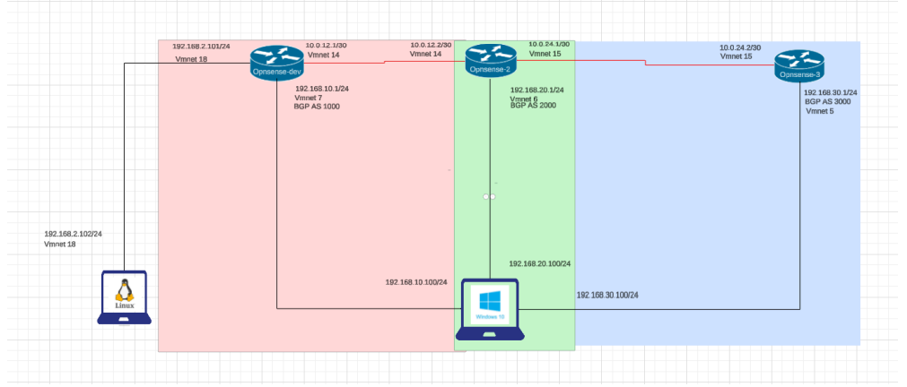

Window 10 PC Network Adapters
Window's PC CMD showing the three different network adapters.

BGP Project Topology
Topology of the project.
Opensense-Dev Router
Screen shot of Opensense-Dev's statically set IP addresses.

This Project is creating a network of 3 Opensense VM routers with two PC's conencted on both sides. One PC is part of the "inner" netork and the other is apart of the "outer" Window's PC CMD showing the three different network adapters.
Topology of the project. Screen shot of Opensense-Dev's statically set IP addresses.Window 10 PC Network Adapters
BGP Project Topology
Opensense-Dev Router